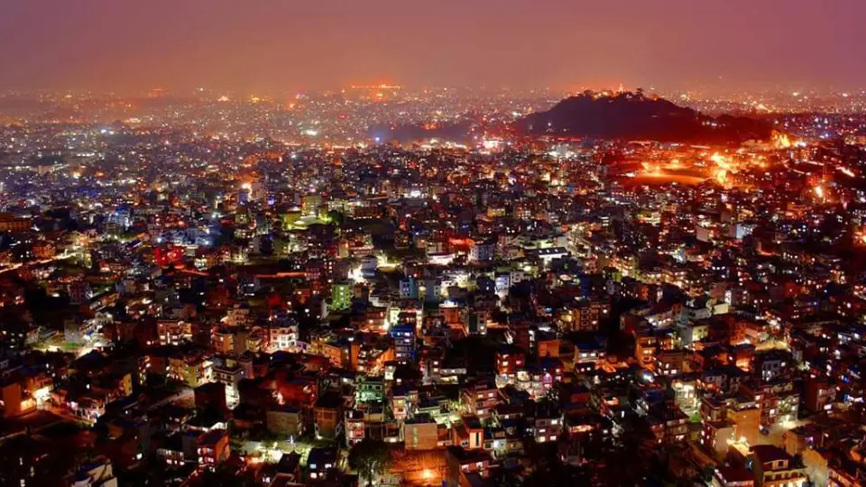
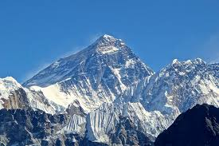
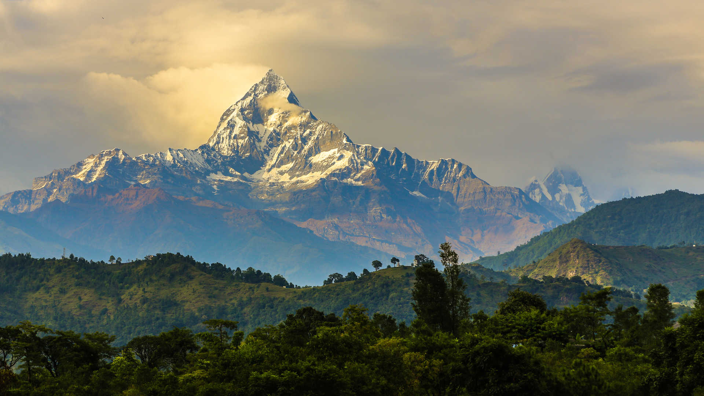
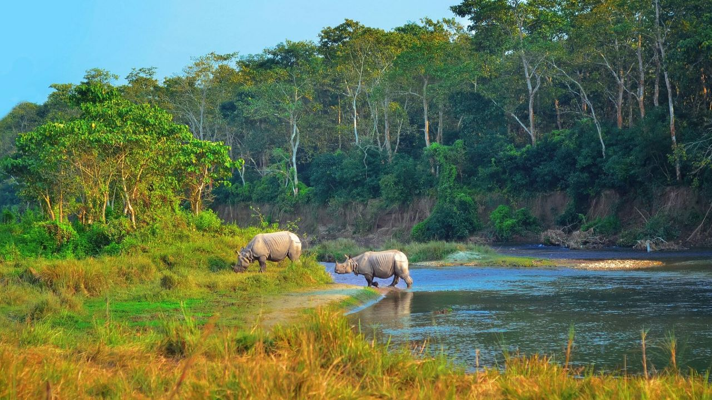

Regions of Nepal
Explore Nepal's diverse geographical regions

Kathmandu Valley
The cultural heart of Nepal, home to three ancient cities: Kathmandu, Patan, and Bhaktapur. Features seven UNESCO World Heritage Sites within 20km radius.
Cultural Tours

Everest Region
Home to Sagarmatha (Everest), the world's highest peak. Explore Sherpa culture, Buddhist monasteries, and breathtaking Himalayan vistas.
Everest Treks

Annapurna Region
Diverse trekking routes around the Annapurna massif. From easy hikes to challenging passes, offering spectacular mountain views.
Annapurna Treks

Terai Region
The fertile plains bordering India, home to national parks like Chitwan and Bardia with rich wildlife including tigers, rhinos, and elephants.
Wildlife Tours
Mustang Region
The ancient kingdom of Lo, known as "Little Tibet" with its arid landscape, cave dwellings, and preserved Tibetan Buddhist culture.
Upper Mustang Trek